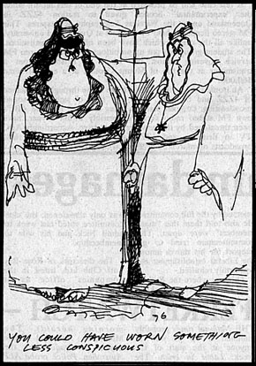

|
REVELATIONS
of the clandestine behavior of Australia's security services were made
by two witnesses at a remarkably unpublicised open hearing of the royal
commission on intelligence and security in Melbourne this tuesday. The
hearing was not advertised and the media were not notified it was being
held.
First witness to appear was K. J. Coldicutt, a teacher at a highly
respectable Melbourne public school. Coldicutt told Mr justice Hope that
when he was a student at Melbourne university he was active in the Labor
club in the 1930s. Being concerned about the nazis and fascism he became
secretary and editor of the club's magazine. In 1935 at the age of 20 he
joined the university branch of the communist party and the Friends of
the Soviet Union.
In december 1941 he enlisted in the RAAF and after training as a radio
operator he was recommended for a commission. Then something strange
happened and his commission didnt come through. A colleague from his
university days who was a member of a services intelligence unit
mentioned to Coldicutt that he had come across his name in an
intelligence file because he had spoken at a meeting against the
proposal for the army to take over a public park in South Yarra for army
barracks.
After his discharge in 1945 Coldicutt organised the Realist film unit
which aimed to produce films of social value with the backing of trade
unions and the communist party. He was also an early committee member of
the Melbourne film society and took part in the organisation of the
first film festival in Australia. When the Australian film board was
being established he was approached about becoming a member. Later he
was advised that he had been investigated by security in Canberra and
his appointment to the board was blocked by ASIO.
With the introduction of television to Australia in 1956 Coldicutt
applied for a number of positions with the ABC. This was five years
after he had left the communist party but it didnt seem to change his
troubles with ASIO. He didnt get a job with the ABC and in 1961 he
decided to test the measure of his competence by the commission. He
became a stringer cameraman with ABC television on Australia day and the
results went to air that night. Within a few days he had a contract with
the ABC.
In the early 1960s he applied for a number of positions with the CSIRO
film unit and was told that in view of his political attitudes ASIO
wouldnt approve him being appointed.
Then came the mystery letter from the commonwealth government. Coldicutt
said the letter carried the name of no government department and asked
him to attend for an interview at a specific room number in the T&G
building in Collins street, Melbourne. When
he went to the office it bore no name and contained only a desk and two
chairs. The man sitting in one chair didnt introduce himself but got
straight down to his spooky spiel. He asked Coldicutt if he was prepared
to give information about the 100 or more people he knew in |
 |

the
communist party. When Coldicutt refused he was given the impression that
he could get a commonwealth job if he went along with these intimidatory
tactics. The interview took almost an hour and it was made obvious that
if he did not agree to supply information he would never get a job with
the public service or CSIRO.
Coldicutt stated that he believed his evidence showed that
discrimination exists against Australians because of political activity.
He called for the abolition of security services involved in the
collection of what should be private political information.
Dr Alan Patrick Roberts, a senior lecturer in the physics department at
Monash university, was the next witness to appear. He told the royal
commission that in 1957 he applied to the university of New South Wales
for a lectureship in mathematics. At the time he was a member of the
communist party. After not receiving any reply to his application he
found out through a friend that the head of the mathematics department
had written him a letter offering him the position. The department head
was then told by a clerk that he had been instructed not to send a
letter to Roberts offering him the job.
Dr Roberts told Mr justice Hope that he believed that the information
leading up to these instructions were provided by ASIO.
He also told of an earlier incident which took place in 1953 when he was
teaching at an undisclosed grammar school. After he had been teaching
mathematics for six months the head master told him that a member of the
school council had said that he was a subversive. After the head master
queried this allegation he was given the phone number of the local ASIO
office.
Roberts said the head master spoke to ASIO and details of Roberts' ASIO
dossier were read to him over the phone. The headmaster quoted details
back to Roberts which convinced him that ASIO knew a great deal about
him. The headmaster indicated his disdain for the ASIO witch hunt by
keeping Roberts in his job. In case his ASIO file isnt up to date Dr
Roberts told the royal commission that he was expelled from the
communist party in 1960 for a number of reasons including the dreaded
charge of factionalism. |